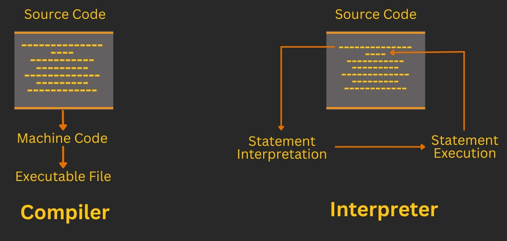
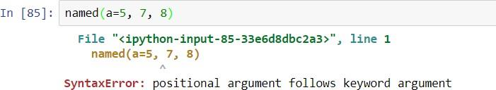

THE BIG PICTURE · WEEK 01
本周知识导图 Weekly knowledge map
先看中心问题，再按编号学习；点击分支标题进入讲解。
代码怎样一步步变成结果？How does code produce a result?
- 程序怎样运行Program execution
- source → compiler / interpreter → execution
- CPU 指令周期 · linker · executable
- 值如何计算Values & expressions
- variable · type · assignment
- 运算符优先级 · /、//、%、**
- 数据怎样组织Strings & collections
- str · list · tuple · set · dict
- index / slice · mutable vs immutable
- 操作怎样复用Functions
- def · parameter · argument · return
- 输入 → 函数体 → 返回值
- 流程怎样控制Control flow
- if / elif / else · for / while
- range · break / continue · exceptions
- 怎样解释结果Trace & explain
- 逐行追踪变量、分支与循环
- 区分 print 的输出与 return 的结果
学习顺序 / Order运行程序 → 理解值 → 组织数据 → 封装操作 → 控制流程 → 解释输出
记忆线索：先算右边，再更新变量；逐行追踪，最后写输出。
新增重点：高级语言 → 汇编语言 → 机器语言；Jupyter code cell / Markdown cell / .ipynb。
英文表达 / English frameThe program first ___. It then ___. The output is ___.
依据本周现有课件讲解整理的学习导航；分支顺序用于复习，不代表官方题量或分值。 A study structure, not an official exam weighting.
知识点概括 / Knowledge overview
本周要回答三个问题：程序由什么组成？Python 如何保存和修改值？代码如何根据条件重复执行或处理错误？
This week answers three questions: What is a program? How does Python store and change values? How does code make decisions, repeat work, and handle errors?
学习路径 / Learning path
program → translation → CPU
type → operator → assignment
string → list/tuple/set/dict
function → parameter → return
if → loop → exception
trace → output → explain
| 阶段 | 课件参考 | 学完应做到 |
|---|---|---|
| 程序与计算机 | Week_1_1_Introduction_Programming.md | 区分 program、algorithm、compiler、interpreter、linker，并按顺序说明执行过程。 |
| Python 语言基础 | Week_1_2_Python_Fundamentals.md | 跟踪变量、类型、表达式、容器、函数和控制流。 |
| 补充训练 | 本页“基础代码”和“图片题考点” | 把课件截图转成可复制代码，并用英文解释输出。 |
1. 程序如何运行 / How programs run
核心解释
程序是一组让计算机执行任务的符号和规则。课件区分 system programs（操作系统、编译器）和 application programs（文字处理、表格等）。语言层次可从 high-level language 经过 assembly language 到 machine language。
English
A program is a set of instructions that tells computer hardware what to do. System programs support the computer; application programs serve users.
Compiler
先把整个 source program 翻译成 machine code，再执行。适合记忆：translate first, run later。
Interpreter
执行过程中逐步翻译代码。适合记忆：translate while running。
Linker
把多个模块和库连接起来，解决对其他代码的引用，生成可执行程序。
文件类型：source program 是程序员写的代码；object program 是编译输出；executable program 是链接库之后可运行的程序。
取指令
解释指令
取数据
执行
保存结果
2. 变量、类型与运算 / Variables, types, operators
变量名保存一个值；Python 自动识别类型，变量名区分大小写。= 是 assignment：先计算右边，再把结果放进左边的 variable。
a = 15
b = 2.5
name = "Ana"
passed = True
print(type(a), type(b), type(name), type(passed))| Operator | Meaning | English sentence |
|---|---|---|
/ | 普通除法，通常得到 float | “Slash performs ordinary division.” |
// | floor division，向下取整 | “Double slash performs floor division.” |
% | remainder，余数 | “Percent returns the remainder.” |
** | power/exponentiation，幂 | “Double star raises a number to a power.” |
2A. 课件基础算术运算与输出 / Arithmetic operations and output
课件列出的基础算术运算包括赋值、加法、减法、乘法、普通除法、floor division、幂和余数。考试常把运算符、结果值和结果类型放在同一道代码输出题中。
The lecture covers assignment, addition, subtraction, multiplication, division, floor division, exponentiation, and remainder. An exam may ask for both the value and the type of the result.
score and Score are different names.| Operator | 含义 / Meaning | Example → result | 结果提醒 |
|---|---|---|---|
= | assignment，把右侧结果绑定到左侧变量 | a = 2 → a is 2 | 先计算右侧，再赋值。Evaluate the right-hand side first. |
+ | addition，加法 | 199 + 201 → 400 | 字符串中也可用于拼接。It can also concatenate strings. |
- | subtraction，减法 | 200 - 300 → -100 | 结果可以是负数。The result can be negative. |
* | multiplication，乘法 | 15.2 * 3 → 45.6 | 字符串中表示重复。It repeats a string. |
/ | ordinary division，普通除法 | 15 / 2 → 7.5 | 通常返回 float。It usually returns a floating-point value. |
// | floor division，向下取整 | 15 // 2 → 7 | -7 // 2 是 -4，因为向负无穷取整。It floors toward negative infinity. |
** | power / exponentiation，幂 | 4 ** 3 → 64 | 右侧可写指数。The right operand is the exponent. |
% | remainder，余数 | 15 % 2 → 1 | 可用来判断奇偶。It is useful for parity checks. |
完整算术案例 / Complete arithmetic example
a = 15
b = 2
print(a + b)
print(a - b)
print(a * b)
print(a / b)
print(a // b)
print(a ** 2)
print(a % b)17
13
30
7.5
7
225
1类型转换案例 / Conversion example
text = "12"
number = int(text)
ratio = float("2.5")
print(number + 3)
print(str(number) + " items")
print(type(ratio).__name__)15
12 items
float3. 字符串 / Strings
String 是字符序列，可以用单引号或双引号创建。+ 拼接，* 重复；replace 替换，转换成 list 可以逐字符处理。
text = "Python"
print(text + " review")
print("ha" * 3)
print(text.replace("P", "p"))
letters = list(text)A string is a sequence of characters. Concatenation joins strings; repetition repeats a string.
3A. 字符串操作补充 / Additional string operations
课件还介绍 tokenize（在 Python 中常用 split）和 join。The slides also introduce tokenization, commonly implemented with split, and joining strings with join.
csv = "red,green,blue"
parts = csv.split(",")
print(parts)
print("|".join(parts))['red', 'green', 'blue']
red|green|blueThe delimiter is removed by split and inserted by join.
4. 四种容器 / Four collections
| Type | 中文理解 | Mutable? | Ordered? | Typical use |
|---|---|---|---|---|
list | 有顺序、可重复的序列 | Yes | Yes | 需要修改的项目集合 |
tuple | 固定的有序序列 | No | Yes | 固定记录、函数返回多个值 |
set | 唯一值集合 | Yes | No | 去重、快速 membership test |
dict | key → value 映射 | Yes | No in the lecture model | 按 key 查找属性 |
items = [3, 1, 3]
items.append(5) # add one object
items.extend([6, 7]) # add elements
items.sort() # changes the list
new_items = sorted(items) # returns a new list
unique = set(items)
student = {"name":"Ana", "score":82}
print(student["score"])易错：append([4,5]) 添加一个嵌套 list；extend([4,5]) 添加两个元素。切片格式是 a[first:last:step]，stop index 不包含。
5. 函数 / Functions
函数把一组操作命名起来，在需要时调用。参数可以有默认值；命名参数可以改变传入顺序，但必须放在位置参数之后。
def classify(score, pass_mark=50):
if score >= pass_mark:
return "pass"
return "review"
print(classify(68))
print(classify(score=45, pass_mark=60))A function takes inputs, performs operations, and returns an output. The return statement sends a value back to the caller.
5A. 函数的 docstring 与多返回值 / Docstrings and multiple returns
Docstring / 文档字符串
def double(x):
"""Return twice x."""
return x * 2
print(double(4))8三引号字符串可以说明函数用途。A docstring documents the purpose of a function.
Multiple return values / 多返回值
def min_max(values):
return min(values), max(values)
low, high = min_max([3, 1, 5])
print(low, high)1 5Python 实际返回一个 tuple，可以拆包到两个变量。Python returns a tuple, which can be unpacked into two variables.
6. 控制流与错误 / Control flow and errors
if/else
根据 condition 决定执行哪一段代码。
for
按顺序遍历一个 sequence，每轮变量取下一个值。
while
只要 condition remains true，就反复执行。
break/continue
break 结束循环；continue 结束本轮并进入下一轮。
try/except
捕获可能发生的 runtime exception，避免程序直接崩溃。
for n in [1, 2, 3, 4]:
if n == 3:
continue
print(n)
try:
value = int("abc")
except ValueError:
print("Invalid input")| Error | Meaning |
|---|---|
| Syntax error | 违反语言语法，例如括号或缩进错误。 |
| Runtime error | 运行时发生，例如除以零或输入无效。 |
| Logical error | 程序运行却产生错误结果。 |
6A. while 与 if 的输出追踪 / Tracing while and if
n = 1
total = 0
while n <= 3:
if n % 2 == 1:
total += n
n += 1
print(total)4循环依次检查 1、2、3；只有奇数 1 和 3 加入 total。The loop checks 1, 2, and 3; only the odd values 1 and 3 are added to total.
7. 基础代码：写法、用途与输出 / Code, use, output
读代码时固定按四步：先看输入值，再按执行顺序跟踪变量，然后判断函数或方法是否修改原对象，最后写出输出。Read the inputs, trace execution, check mutation, and then state the output.
赋值与算术
score = 7
score = score + 3
print(score)
print(15 / 2)
print(15 // 2)
print(15 % 2)10
7.5
7
1score = score + 3 先读取旧值 7，计算右侧 10，再把 10 赋给左侧变量。/ 是普通除法，// 是 floor division，% 是 remainder。
切片、append 与 extend
items = [10, 20, 30, 40]
print(items[1:3])
items.append([50, 60])
print(items)
other = [10, 20]
other.extend([30, 40])
print(other)[20, 30]
[10, 20, 30, 40, [50, 60]]
[10, 20, 30, 40]Slice 的 stop 不包含在结果中。append 把整个参数当作一个元素；extend 把参数中的元素逐个加入。
函数、默认参数与 keyword argument
def total(price, quantity=2):
return price * quantity
print(total(5))
print(total(quantity=3, price=4))10
12第一次使用默认 quantity=2；第二次用参数名传值，所以 named arguments 可以交换顺序。位置参数必须放在 keyword arguments 之前。
循环、continue 与 break
for n in range(5):
if n == 2:
continue
if n == 4:
break
print(n)0
1
3continue 跳过 n=2 这一轮的 print；break 在 n=4 时结束整个循环。
8. 基础表达式速查 / Quick output reference
| Expression | 用途 | Result |
|---|---|---|
"ha" * 3 | 重复 string | "hahaha" |
"Python".replace("P", "p") | 返回替换后的新 string | "python" |
list("abc") | 把 iterable 转为 list | ['a', 'b', 'c'] |
{"name": "Ana"}["name"] | 按 dictionary key 取 value | "Ana" |
set([1, 1, 2]) | 去除重复值 | 集合含 1 和 2；显示顺序不保证。 |
sorted([3, 1, 2]) | 返回新排序 list | [1, 2, 3]；原 list 不变。 |
9. 课件截图补充：程序怎样变成结果

Compiler 与 interpreter
左侧表示 compiler 先把完整 source code 翻译为 machine code/executable，再运行；右侧表示 interpreter 读取一条 statement、翻译并立即执行，然后继续下一条。
A compiler translates the complete program before execution, whereas an interpreter translates and executes statements one by one.

参数顺序错误
截图中的 SyntaxError: positional argument follows keyword argument 表明：函数调用中，普通位置参数必须出现在 named/keyword arguments 之前。
Positional arguments must come before keyword arguments in a function call.
明确输入、输出与约束
设计有限步骤
用语言实现
验证与修错
修改和扩展
Coding 主要指把方案写成代码；programming 范围更大，还包括问题分析、算法设计、测试、文档和维护。
10. 课件代码截图中的高频陷阱
| 知识点 | 必须会判断 | English frame |
|---|---|---|
| 赋值顺序 | 先计算右侧 expression，再把结果绑定到左侧 variable；右侧使用的是赋值前的当前值。 | The right-hand side is evaluated first, and the result is assigned to the variable. |
break | 立即结束最内层循环，循环后面的语句继续执行。 | Break terminates the nearest enclosing loop. |
continue | 跳过当前 iteration 剩余语句，进入下一轮。 | Continue skips the rest of the current iteration. |
while True 验证 | 不断读取输入；有效时 break，无效时提示后重试。 | The loop repeats until valid input is entered. |
| Mutable / immutable | list、dict、set 可原地改变；int、float、bool、str、tuple 不可原地改变。 | A list is mutable, whereas a tuple is immutable. |
sort / sorted | list.sort() 修改原 list 并返回 None；sorted(x) 返回新 list。 | Sort changes the original list; sorted returns a new list. |
10A. 课件补充：Jupyter、编程过程与语言层级 / Jupyter, process, and language levels

Programming language / 编程语言
Programming language 是一套 written symbols and rules，用来指示 computer hardware 完成任务。A programming language is a set of written symbols and rules that instruct computer hardware to perform tasks.
高级语言、汇编语言、机器语言 / High-level, assembly, machine
三层不要混淆：高级语言更接近人类表达；汇编语言使用 mnemonic symbols；机器语言直接使用 binary digits（0 和 1），由硬件执行。High-level languages are closer to human expression; assembly uses mnemonic symbols; machine language uses binary digits and is executed by the CPU.
| 层级 / Level | 课件特征 / Course feature | 转换工具 / Translator | 可能考点 / Exam focus |
|---|---|---|---|
| High-level language 高级语言 | Python、C++、Java、JavaScript；可读性较高。Readable and relatively concise. | compiler 或 interpreter | 更容易编写、阅读和维护，但不能直接作为 CPU 指令执行。Easier to write and maintain, but not directly executed by the CPU. |
| Assembly language 汇编语言 | 用 mnemonic symbols 表示低层指令，例如操作码和寄存器名称。Uses mnemonic symbols for low-level instructions. | assembler | 比高级语言更接近硬件。Closer to hardware than a high-level language. |
| Machine language 机器语言 | 由 binary digits（0/1）组成，CPU 可以直接执行。Consists of binary digits and can be executed directly by the CPU. | 不需要再翻译成更低层指令 / no further translation | 题目可能给出 0/1 或 hardware switches/gates，让你识别 machine language。Identify it from binary digits or hardware switches and gates. |
Jupyter Notebook 基础 / Jupyter basics
Anaconda 是课件推荐的安装方式；Jupyter Notebook 用 notebook 文件记录代码和说明。Anaconda is the recommended installation route; a notebook stores executable code and explanations.
| Code cell | 写入并执行 Python code。Write and execute Python code. |
| Markdown cell | 写 narrative text、标题、公式或说明。Write narrative text, headings, equations, or explanations. |
.ipynb | Notebook 的常见文件格式。The common notebook file format. |
| 分享方式 / Sharing | 发送 .ipynb、导出 HTML/PDF，或托管到网站/服务器。Send the file, export HTML/PDF, or host it on a server. |
Programming process / 编程过程
课件把 programming 视为完整过程：problem identification and solving → implementation → maintenance。Programming includes problem solving, implementation, and maintenance; coding is only part of implementation.
识别问题与约束
identify the problem
算法与代码
algorithm and code
修复、更新、扩展
fix, update, extend
这些内容来自两份 Week 1 PDF。These points come from the two Week 1 PDF lectures.
11. 剩余正式课件考点 / Remaining lecture points
| Topic | Course point | Exam distinction |
|---|---|---|
| Program categories | System programs 支撑计算机运行，如 operating system、compiler；application programs 为用户完成任务，如 word processor、spreadsheet。 | 按服务对象区分，不按编程语言区分。 |
| Language levels | High-level language → compiler/assembler/interpreter → machine language → hardware switches/gates。 | Assembly 使用 mnemonic symbols；machine language 使用 binary digits。 |
| C / C# / Java / JavaScript / Python | C 与 UNIX 历史相关；C# 与 .NET/CLI 相关；Java 强调跨平台运行环境；JavaScript 可在网页环境执行；Python 强调可读性、较少代码和快速开发。 | Java 和 JavaScript 不是同一种语言。 |
| Variable names | 名称区分大小写；由 letters、digits、underscore 构成；不能以 digit 开头；不能使用 Python keyword。 | score 与 Score 是两个变量。 |
| Type conversion | int()、float()、str()、bool() 建立新类型值；type(x) 查询类型。 | / 通常返回 float；conversion 可能因无效文本产生 ValueError。 |
| Collection details | List 可混合类型；tuple 可用于函数返回多个值；dict 由 key:value 映射；set 保存 unique values，适合 membership 和去重。 | Set 无位置索引；dict 查找使用 key；slice 的 stop 不包含在结果中。 |
| Data/AI examples | 课件用 data availability、analytics、automation、Deep Blue、Watson、AlphaGo 和 humanoid robots 说明程序与 AI 的现实应用。 | 这些是导论案例，不代表 Week 1 只考 AI。 |
12. Week 1 图片题考点 / Visual-question checklist
| 课件图片类型 | 看图时先找什么 | 可能要求 |
|---|---|---|
| Compiler / interpreter 流程图 | source code、translation、machine code、execution 的先后关系。 | 比较“translate complete program first”与“translate and execute statement by statement”。 |
| CPU fetch-decode-execute 图 | instruction 与 data 在 fetch、decode、retrieve、execute、store 中的流向。 | 按正确顺序排列阶段，说明每一步职责。 |
| 变量和算术输出截图 | 右侧 expression、运算符优先级、结果类型。 | 预测 /、//、%、** 的值和类型。 |
| List / tuple / dict / set 截图 | 括号形式、索引方式、mutable、ordered、unique。 | 识别数据结构，判断修改后输出或选择合适容器。 |
| 函数与参数错误截图 | def、parameter、return、default value、调用顺序。 | 指出 positional argument follows keyword argument 的原因并改正。 |
| Loop / exception 截图 | 每轮变量值、condition、缩进、break/continue/except 的跳转位置。 | 逐行追踪输出，区分 syntax、runtime 和 logical error。 |
| High-level / assembly / machine 图 | 辨认 Python/C++ 等高级语言、mnemonic symbols、binary digits、hardware switches/gates，以及 compiler/assembler 的箭头。Identify the levels, the symbols, the binary representation, and the translator arrows. | 按 high-level → assembly → machine → hardware 排序并解释差异。 |
| Jupyter notebook 界面图 | 看清 Code cell、Markdown cell 和 notebook 文件。Distinguish code cells, Markdown cells, and the notebook file. | 判断哪个 cell 执行代码、哪个 cell 写说明，以及 .ipynb 如何分享。 |
13. 可能的考试问法 / Possible exam prompts
- 判断 compiler、interpreter、linker 的正确顺序或描述。
- 区分 syntax、runtime、logical error。
- 判断变量名是否合法、表达式结果类型是什么。
- 判断 list/tuple/set/dict 的 mutable、ordered、unique 性质。
- 判断
append、extend、sort、sorted的结果。
- 跟踪一段含 assignment、if、loop、break/continue 的输出。
- 用英文比较 compiler 与 interpreter。
- 解释一个 slice 的 start、stop、step。
- 写一个带 positional/default/keyword arguments 的函数调用并说明顺序。
- 说明
try/except为什么不会让程序直接崩溃。
这些是根据正式课件与官方题型整理的自测方向，不是官方题目或题量预测。
13A. 这些内容还可以怎样考 / Additional exam patterns
The following patterns are plausible ways to test the Week 1 lecture content. They are study prompts, not leaked exam questions.
| 题型 | 可能问法 / Prompt pattern | 答题抓手 |
|---|---|---|
| 语言层级识别 / Identify the language level | 给出 Python、mnemonic symbols、binary digits 或 hardware switches，判断属于哪一层。 | High-level → assembly → machine → hardware；记住 assembler 对应 assembly。 |
| 比较题 | “Compare high-level, assembly and machine language.” | 比较可读性、表示形式、与硬件距离和转换工具。 |
| 流程排序 / Order the translation pipeline | 把 source program、object program、linker、executable、CPU execution 排序。 | source → compiler → object → linker/loader → executable → execute。 |
| Jupyter 判断题 / Jupyter true-false | Code cell、Markdown cell、.ipynb、HTML/PDF export 各自用途是什么？ | 代码执行、文字说明、文件格式、分享方式要逐一对应。 |
| 算术输出题 / Arithmetic output | 预测 /、//、%、**，并判断 float 或整数结果。 | 先按优先级计算，再看类型；特别检查负数 floor division。 |
| 变量与类型题 / Variables and types | 判断变量名是否合法，或预测 int()、float()、str()、type() 的结果。 | 区分“转换得到新值”和“查询当前类型”；注意大小写和 keyword。 |
| 编程过程简答 / Programming process short answer | Explain why programming is more than writing code. | 写出 problem solving、implementation、maintenance 三个阶段。 |
14. 英文输出与自检 / English and check
Predict output: “The output is ___. This happens because ___.”
Compare: “A is mutable, whereas B is immutable.”
Explain code: “This loop visits each item in the list and prints it.”
- 我能手算
/、//、%和切片。 - 我能比较 list、tuple、set、dict。
- 我能解释 append、extend、sort、sorted。
- 我能跟踪函数参数、return 和循环输出。
- 我能区分三类错误和 try/except。
- 我能解释高级语言、汇编语言、机器语言和 assembler。I can compare the three language levels and name the translator.
- 我能预测八种基础算术运算的输出和类型。I can predict the output and type of the arithmetic operators.
- 我能区分 Code cell、Markdown cell 和
.ipynb。I can distinguish notebook cells and the file format.
0 / 0 completed